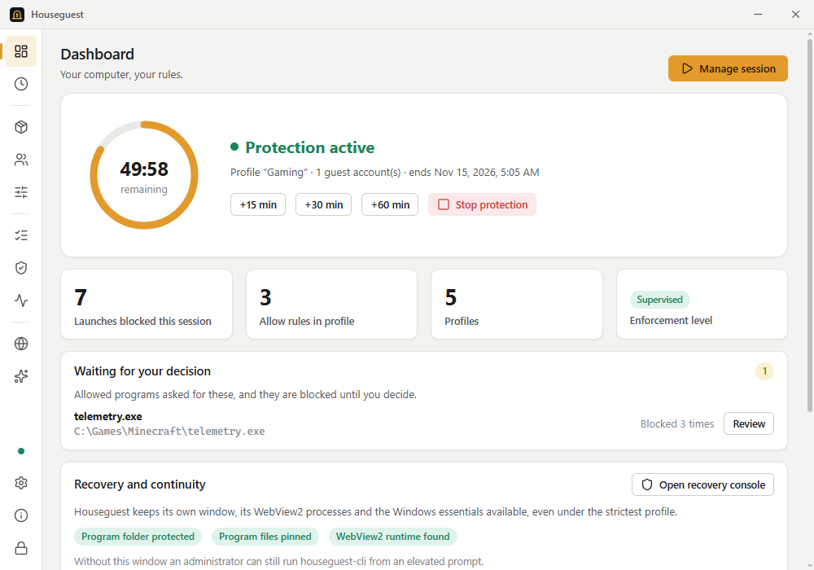
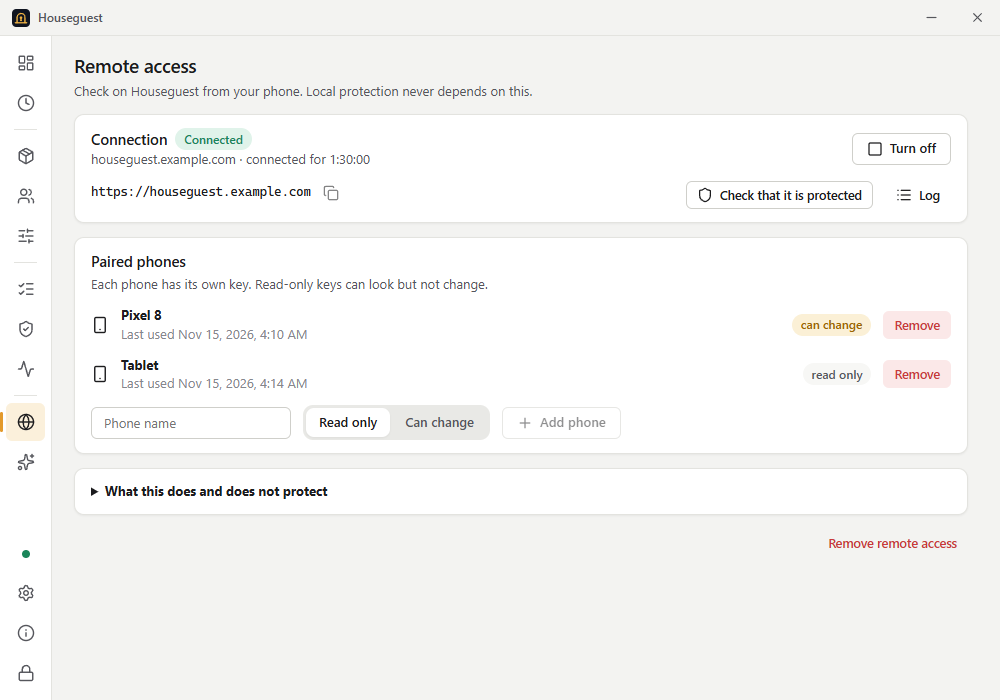
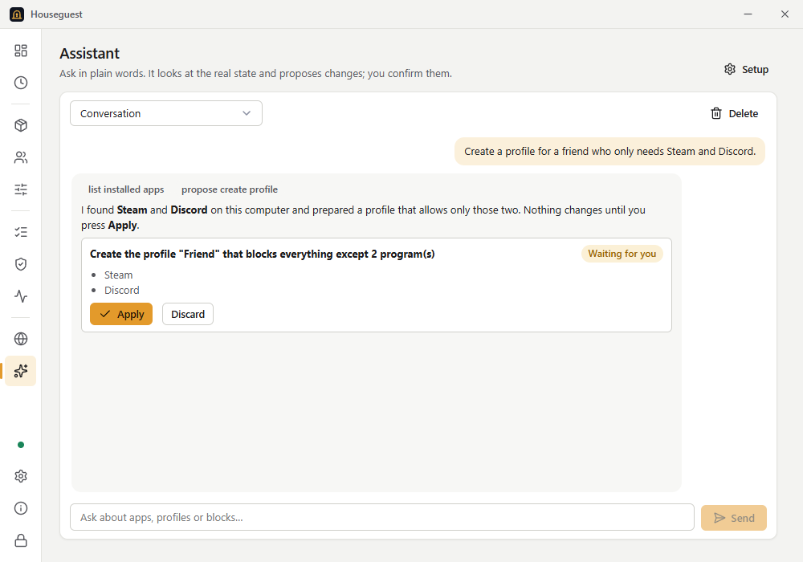

Lend your PC without lending your life.
Houseguest is an open-source Windows app blocker for guest sessions. Choose exactly which programs a guest account may run, for as long as you decide. A Windows service enforces the rules, so closing the window changes nothing.

What it does
Timed guest sessions
Pick a profile, the guest account and a duration. Extend, stop, or let it expire and lock the guest out.
Rules by path, hash or publisher
Hash and publisher rules survive renaming. A preview shows which installed apps would run and which would be blocked.
Cannot lock you out
Essential Windows processes and Houseguest itself are always allowed, and an administrator can always recover or uninstall.
Auditable
Every block and change goes into a hash-chained log. The source, the build and the release provenance are public.
Quiet desktop app
Notification-area icon with the session timer, optional start with Windows, and the Windows light or dark theme.
Private by design
No telemetry and no account. Nothing leaves your computer unless you press the update check.
Honest limits
Houseguest is reactive, not preventive: it stops a program shortly after Windows reports that it started, so a blocked program can run for a moment. It uses no kernel driver, AppLocker, App Control or Windows Defender, and it relies on Windows access control for its own protection. It has been verified only on Windows 10 Pro 22H2. Read the security notes and the FAQ.


Use cases
Lending your laptop for an hour, giving a child access for homework only, a game night with a limited program set, or letting a coworker present from your machine. See the documentation for step-by-step profiles.